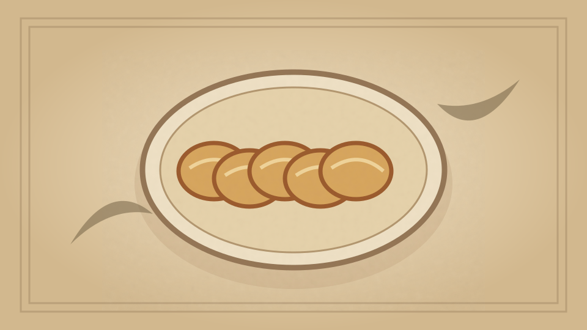

1910 · Fannie Merritt Farmer · BREAD AND BREAD MAKING
Milk and Water Bread
The Boston Cooking-School Cook Book

Historical Recipe
The following text is extracted from the 1910 edition, retaining historical terminology and quantities.
Original Ingredients & Directions
1 cup scalded milk
1 cup boiling water
1 tablespoon lard
1 tablespoon butter
1½ teaspoon salt
1 yeast cake dissolved in
¼ cup lukewarm water
6 cups sifted flour, or one cup white flour and enough entire wheat flour to knead
Prepare and bake as Water Bread. When entire wheat flour is used add three tablespoons molasses. Bread may be 55 mixed, raised, and baked in five hours, by using one yeast cake. Bread made in this way has proved most satisfactory. It is usually mixed in the morning, and the cook is able to watch the dough while rising and keep it at uniform temperature. It is often desirable to place bowl containing dough in pan of water, keeping water at uniform temperature of from 95° to 100° F. Cooks who have not proved themselves satisfactory bread makers are successful when employing this method.
Automatically extracted transcription; editorial verification pending. Historical instructions may not meet modern food-safety standards.